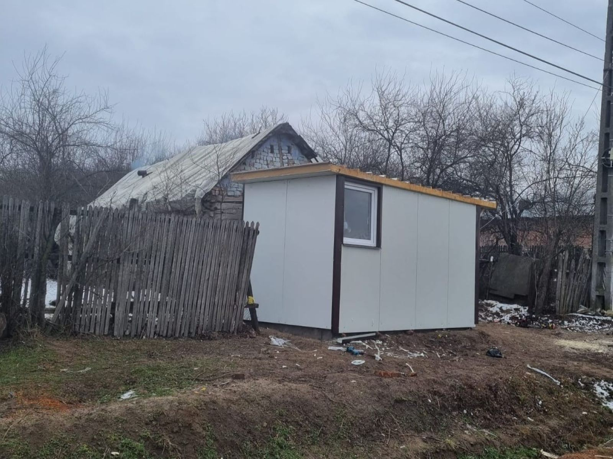
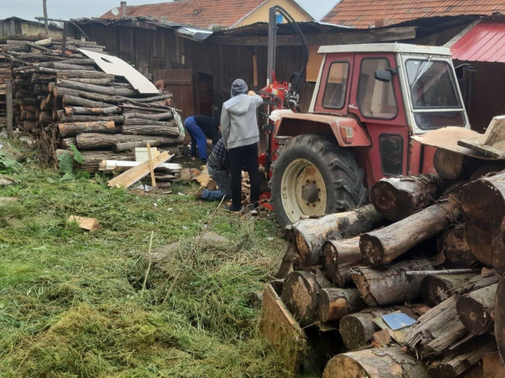
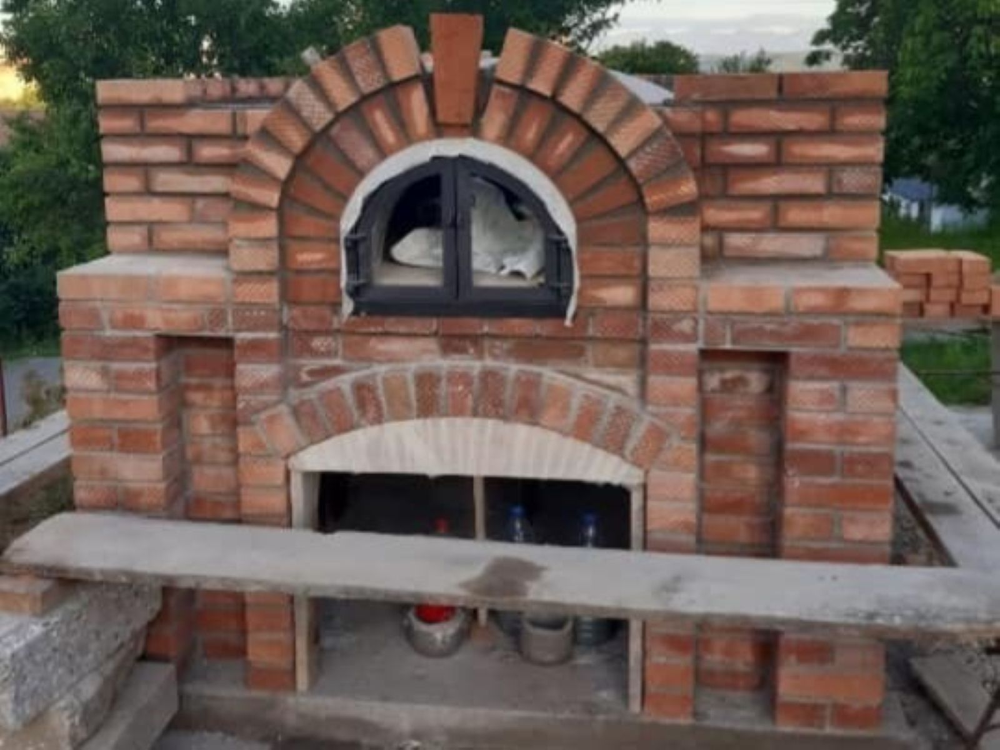

Acasă
Despre noi
Evenimente
Proiecte
Parteneriate
Echipă
Donează
Contact
Acasă
Despre noi
Evenimente
Proiecte
Parteneriate
Echipă
Donează
Contact

ZÂMBET ÎN PRAG
Prin proiectul „Zâmbet în Prag” ne propunem să aducem bucurie și siguranță în viețile celor aflați în dificultate, oferindu-le un cămin primitor și un loc pe care să-l numească „acasă”.
De data aceasta, prin construcția acestui container din panouri sandwich, vrem să așezăm un zâmbet pe chipul doamnei Maria, văduvă, fără aparținători care să o sprijinească în anii grei ai bătrâneții care vine adesea cu multe nevoi și neputințe.
. . . . .

CĂLDURĂ PENTRU TRUP SI SUFLET
Este un proiect care a fost și continuă să fie de un real folos în viața comunităților dependente de lemn ca unică sursă de încălzire, aducându-le beneficii economice, sociale și de siguranță.
✓ Ajutor pentru persoanele vârstnice, singure sau pentru cele cu dizabilități.
✓ Promovarea spiritului de solidaritate și cooperare între membrii comunității, prin ajutorul reciproc.
✓ Procurarea și pregătirea lemnului de foc pentru familii sărace sau vulnerabile.
. . . . .

CUPTORUL PRIETENIEI
Un cuptor poate avea multiple beneficii pentru o comunitate, contribuind la ridicarea acesteia din mai multe puncte de vedere:
1. Program de mese sociale
2. Organizarea de cursuri și ateliere pe domeniul panificației
3. Loc de întâlnire și socializare
. . . . .